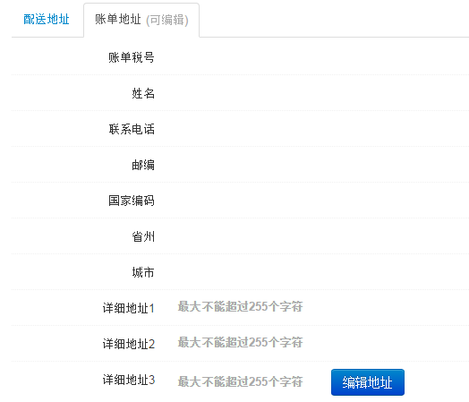

订单管理
订单管理提供各平台2014年以后的所有订单,包含亚马逊订单和德国ebay订单。ERP每半小时更新一次订单。
亚马逊订单:
支持输入订单号、购买人邮箱、账单号、Sku和CustomId其中之一，不限制订单时间查询相应订单。
- 订单状态：Pending、UnShipped、Shipped、Canceled
- 发货类型：AFN(亚马逊发货)、MFN(本地仓发货)
- 查看详细和ERP中所有订单号都提供链接可查看订单详细信息,信息包含：订单基本信息、退货信息、ERP退款信息、亚马逊费用信息(权限查看)。
- 基本信息,支持四种账单打印，其中退款单是针对退货数量全额退款账单，部分退款单是针对退款金额账单。点击编辑地址即可编辑相应账单地址。

- 退货信息,有退货产品时红色标注，无退货产品时红色标注列隐藏
- ERP退款信息,显示通过ERP操作退款成功的退款记录
- 亚马逊费用信息
Ebay订单:
- Ebay订单都是MFN订单。
- 点击订单号查看ebay订单详细信息，信息包含：基本信息、买家信息和货品信息